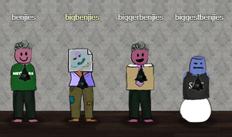

Holiday Hack Challenge 2018 Report¶
Introducing the team¶

Police lineup at the North Pole Police Station
The team members were arrested by the North Pole Police Department (NPPD) for hacking using their toes. biggestbenjies claims he is innocent because he has no toes and is very grumpy as a result.
Objectives:
- Questions and Answers Summary
- Question 1: Orientation Challenge
- Question 2: Directory Browsing
- Question 3: de Bruijn Sequences
- Question 4: Data Repo Analysis
- Question 5: AD Privilege Discovery
- Question 6: Badge Manipulation
- Question 7: HR Incident Response
- Question 8: Network Traffic Forensics
- Question 9: Catch the Malware
- Question 10: Identify the Domain
- Question 11: Stop the Malware
- Question 12: Recover Alabaster’s Password
- Question 13: Santa’s Door
- Question 14: Who Is Behind It All?
- Question 1: Orientation Challenge
- Question 2: Directory Browsing
- Question 3: de Bruijn Sequences
- Question 4: Data Repo Analysis
- Question 5: AD Privilege Discovery
- Question 6: Badge Manipulation
- Question 7: HR Incident Response
- Question 8: Network Traffic Forensics
- Question 9
- Question 10: Identify the Domain
- Question 11
- Question 12: Recover Alabaster’s Password
- Question 13
- Question 14: Who Is Behind It All?